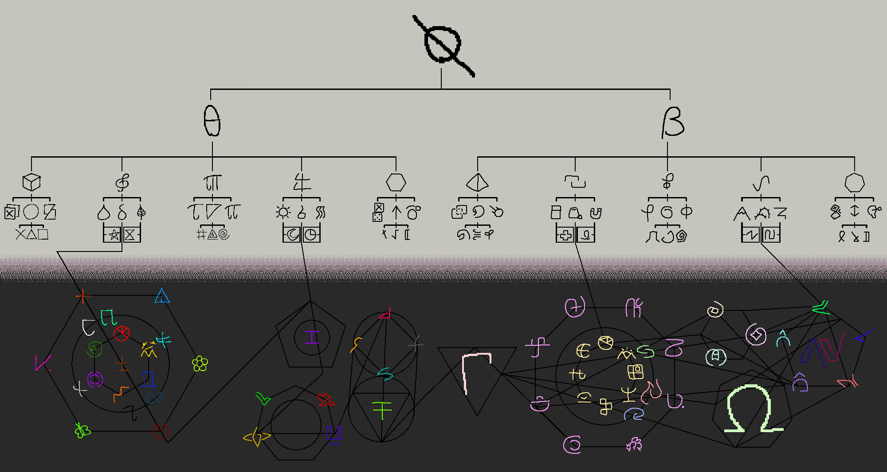
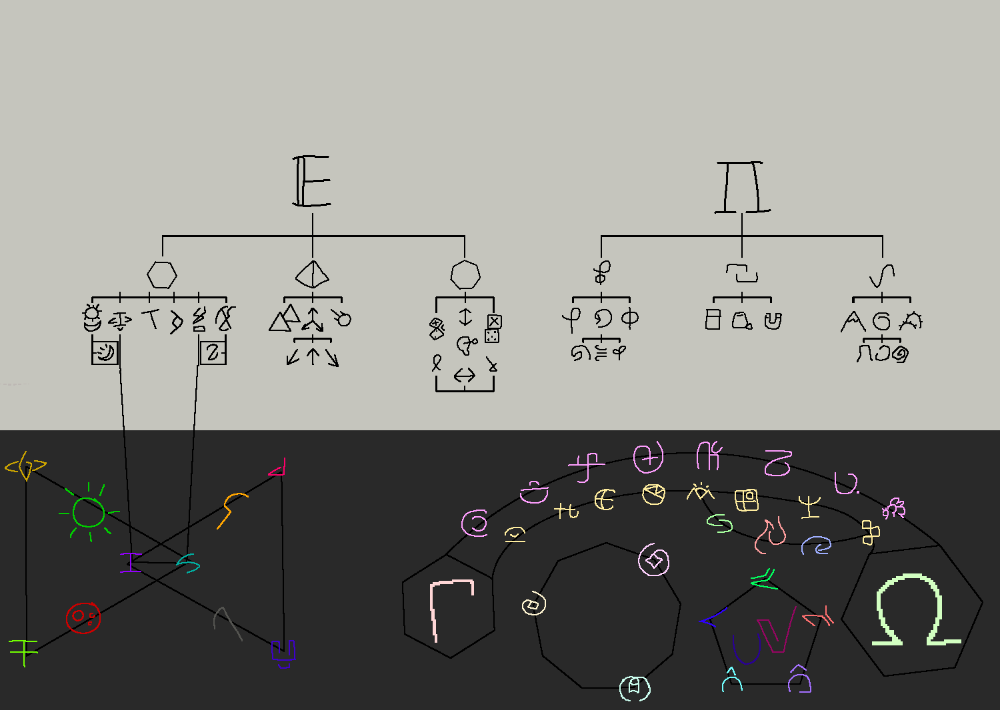
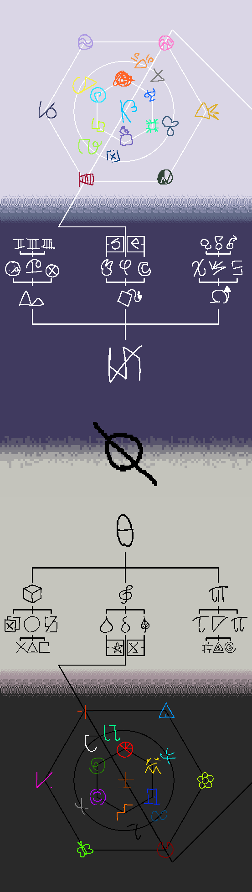
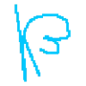
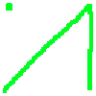

(okay so for context a pseudo is a fanmade toma)
(this page is my attempt to document every pseudo)


Initially I wanted this to be an organised version of k's tree
but in the process i changed and removed a buncha things and moved everything
it's too different to be the same au but too similair to be its own au so yeah


kib
evillaug